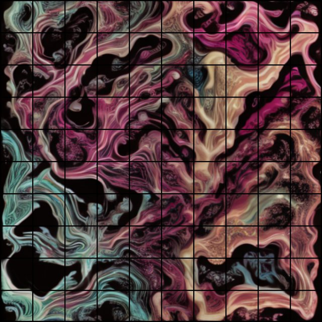

One prompt.
100 squares.
Turn text into evolving AI imagery. Compose a live 10 × 10 atlas, route it through TouchDesigner, and prepare it for your MadMapper installation.
Windows + NVIDIA GPU · Local synthesis · No API tokens

What happens after you type a prompt?
AI generation
SD-Turbo generates 512 × 512 images using one diffusion step. A changing mixture of latent noise creates related frames over time. The output loop blends those images and enlarges them to a 1080 × 1080 atlas.
Live performance
The browser panel provides prompt changes, presets, evolution speed, spacing, brightness, freeze, calibration, and blackout. Choose a continuous image across all squares or repeat it inside each square.
This is evolving image synthesis, not a cinematic text-to-video model. Expect morphing; coherent characters and camera motion are not guaranteed. The squares share one generator.
Start locally, then connect the mapping tools.
- Install the engine. Download and extract the package. Install Python 3.12 and a compatible NVIDIA driver, then open
Install on Windows.cmd. - Generate. Open
Start LiveGrid.cmd. The first run downloads model weights. The interface opens at127.0.0.1:8765. - Receive in TouchDesigner. Add a Syphon Spout In TOP, disable Use Spout Active Sender, and select
LiveGrid-AI-100. Connect it to a Null TOP. - Check all 100 squares. Enable Calibration. Confirm 001 is top-left and 100 bottom-right. The package supplies a calibration PNG and a JSON table of pixel and UV coordinates.
- Prepare MadMapper. For the same Windows computer, use a Spout Out TOP named
LiveGrid-TD-100. For another computer, use an NDI Out TOP and a wired local network. Receive that source in MadMapper and assign each quad its matching input crop.
Spout stays on one computer. NDI is the bridge between computers. Adjust MadMapper output corners to the physical installation while preserving each square’s input crop.
Controls at a glance
| Control | What it changes |
|---|---|
| Prompt + presets | The imagery being synthesized locally |
| Mosaic / Repeat | One image across the grid or the same image in each square |
| Evolution speed | How quickly the image’s latent noise changes |
| Spacing + brightness | Black gaps and overall output intensity |
| Freeze / Calibration / Blackout | Hold the image, identify cells, or send black; each pauses synthesis |
Tested here. Ready for the next connection.
Verified
- Local GPU inference and browser controls
- 100-cell coverage, numbering, gaps, and control validation
- Successful Spout sending
- About 8–10 generated images/s and 21–22 output frames/s in a short laptop test
Still to verify
- TouchDesigner reception and a saved native project
- NDI delivery to the other computer
- MadMapper’s 100 quad surfaces and physical alignment
No finished native .toe or .mad project is included. Performance depends on hardware and load.
Questions before a show
Does this consume API tokens?
No. The engine uses local GPU inference. Building or modifying the project with an AI coding assistant is separate from running it.
Can the hosted site generate video?
No. GitHub Pages serves static files. Download the engine and start it locally to use the working controls and video feed.
Can I give every square a different prompt?
Not in this version. All 100 cells share a single generated image stream, displayed as a mosaic or repeated tiles.
What must I copy to the other computer?
Copy the source package and recreate its Python environment. Do not copy a virtual environment. Alternatively, leave inference here and send TouchDesigner’s NDI output to the mapping computer.
What licenses apply?
The model, TouchDesigner, and MadMapper have separate licenses. See the SD-Turbo model card and the software vendors’ terms for your intended use.